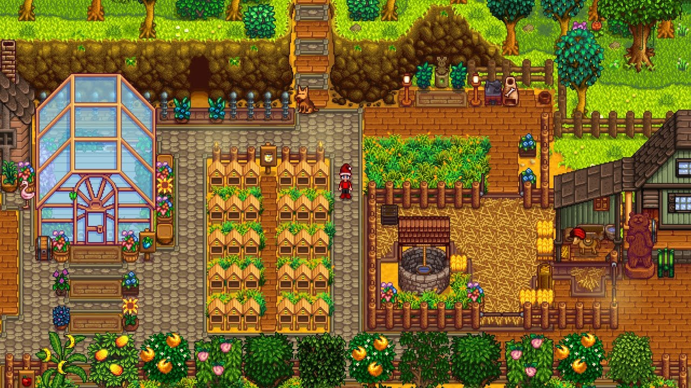
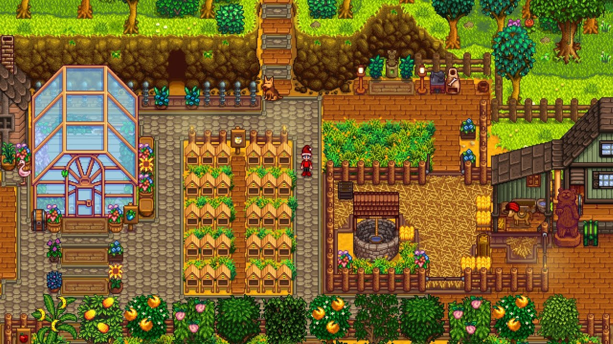

Welcome to Stardew Valley
An Introduction to Stardew Valley
Stardew Valley is a game that was released in early 2016 and has since gathered 20 million sales across all platforms availible. The developer, Concerned Ape, is continuing to update and add to the game while also developing another game. The next big update for Stardew Valley is for this year sometime and is in its final developing stages so it can be expected to come out soon. The update has been revealed to have a new festival, two mini festivals, new items, new farm type, and tons of new dialogue for the villagers. And this is only scraping the top off of the content, the update will contain a lot more to it to add to the game.
Stardew Valley is an RPG game that can be enjoyed multiplayer with up to four friends, but is just as enjoyable to play single player. The game has a year cycle with all four seasons and the major holidays. Since it is a country-life farming sim, the crops the player may grow relies on the cycle and the specific seasons, and the crops meant for certain seasons will die when a new season starts. The player can grow crops and raise animals to yield their products to sell or give to the villagers. The About page will have more details on the game for you to enjoy.
 
